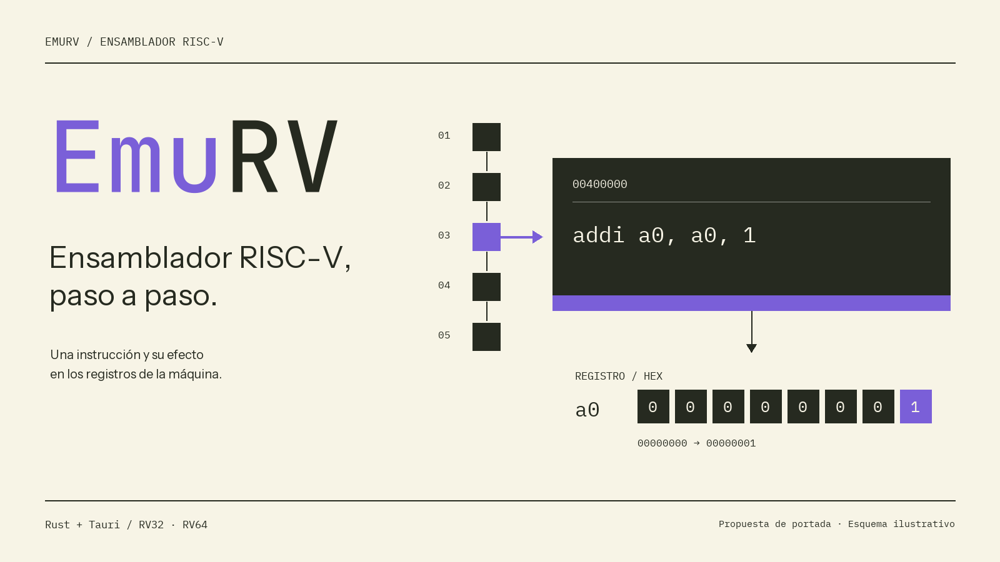

EmuRV / Propuestas
Cuatro formas de
presentar EmuRV.
Conservé el púrpura y el negro. Las alternativas parten de la ejecución por instrucciones, los registros y la pantalla gráfica.
Elegiste A / Paso. Ver la animación de inicio → Las otras propuestas quedan como referencia.
Aplicación en el portafolio
Probá el logo y la frase.
La primera explica el uso de la herramienta. La última conserva el enfoque técnico del sello anterior. Los resultados de validación siguen en la página.
Esta vista carga el caso real de EmuRV y cambia el logo y el sello dentro del recuadro. Podés recorrer la página y probar sus enlaces.
Canvas Design / Ejemplo
Una portada para el proyecto.

Preparé una ilustración de una instrucción y su efecto en un registro. Esta primera portada conserva el logotipo anterior como referencia.

También podemos crear una imagen para compartir el proyecto, portadas de las lecciones, láminas para la defensa y diagramas que mantengan estos colores y proporciones.